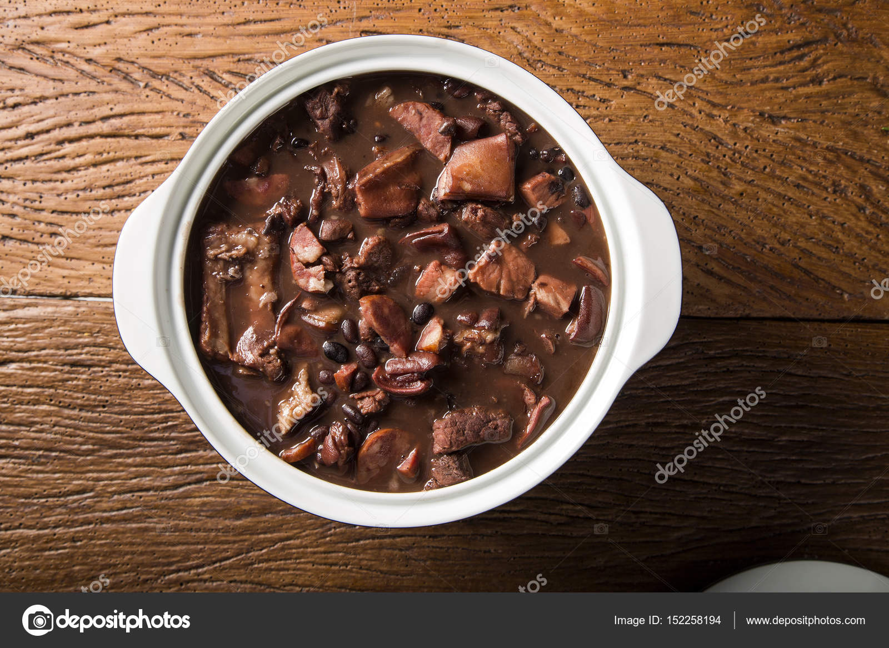

how long does it take to cook? over 2 hours
how many people does it serve? 16
a very chunky meal that can serve many guests at once
Ingredients:
- one kilogram of salted pork rib
- eight hundred grams of sun-dried salt beef
- six hundred grams of pork fillet
- one kilogram of black beans
- five hundred grams of paio (if not available sausage can be used in it's place)
- three white onions
- five garlic clovers
- one fourth of a teacup of olive oil
- three bay leaves
- one teaspoon of cumin
Preparing on the day before
- start by desalting some of the meats. dice the fillet and sun-dried beef. separate the rib segments.
- separate each type of meat on a different bowl, cover with water and put it in the fridge. let it rest for 24 hours and change the water every 3 hours or so.
Preparing the main dish:
- sieve the beans and clean them with running water. transfer them to a large bowl and cover them with two and a half litres of water. discard any floating beans.
cover the bowl with a plate and let it rest for half an hour. make sure to not forget them in the water. meanwhile pre-cook the meats.
- poor the water from the meat containers and transfer them to a big pot with enough space for at least eleven litres of water. cover the meats with water and put them on high heat stove (four litres should be enough)
water may vary as long as every cut of meat is under water. let it boil and start counting to ten minutes.
- meanwhile, peel the onions and dice them into tiny pieces alongside the garlic clovers. remove the water from the beans.
- once the meats are ready, transfer the pre-cooked meats to a big container and remove the excess water. take care to not burn yourself.
- return to the hot pot. once it heats up, add olive oil to its surface, put the onions and season with salt. stir the onions for eight minutes until it starts becoming golden brown. add the garlic, cumin,
the bay leaves, stir for a minute to build up the flavor.
- add the beans to the pot and stir. add six litres of water and keep the pot on high heat. once it starts to boil,
add the pre-cooked sun-dried beef and the ribs. lower the flames and let it cook for two hours. stir once in a while.
- after two hours of cooking is done, add the pre-cooked fillet and the paios (or sausages). let it cook at low heat for three hours, stirring once in a while with care to not burst the beans
- thirty minutes before the cooking ends, take out the paios and slice them. return the slices to the pot and finish cooking or at least until the meat softens and the soup thickens. serve with rice
RETURN TO THE MAIN PAGE